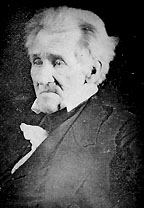
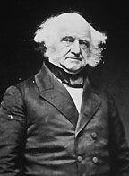

|
Democrat Andrew Jackson was elected president in 1828, and
her served until 1836. During his presidency, sectional
differences and slavery moved to the forefront of national
politics, and they continued to be the preeminent issues on
the national level until the Civil War. With the charismatic
|

Andrew Jackson, founder of the modern
Democratic Party
|
Jackson in control, the Democrats managed to maintain a
coalition of extremely diverse interests, to form a
consensus, and to pass many laws contrary to the interests
of one section or another, including the Tariff of 1828.
This Tariff strained the Democratic coalition to its
breaking point.
The Nullification Crisis
In 1829, John C. Calhoun, who was at that time
vice-president, published an anonymous essay entitled "The
South Carolina Exposition and Protest", in which he said
states could engage in "interposition" or nullification of
legislation it did not approve of. Obviously this meant
that to Calhoun the states were sovereign and that the
Constitution was a compact of states. In Calhoun's view,
nullification could only be overturned by a Constitutional
amendment. He saw this as an adequate safeguard of minority
rights. Congress responded badly, but not as badly as
President Jackson. Calhoun increasingly found himself pushed
out of a position of national leadership, overtaken by
Martin Van Buren, who replaced Calhoun as Vice-President for
Jackson's second term. The nullification doctrine was put to
the test in 1832, when Congress passed a new tariff that did
not accede to Southern demands. In November of 1832, a
convention in South Carolina adopted an ordinance that
voided the tariffs of 1828 and 1832 and warned that if the
federal government attempted to enforce them, that the state
would secede. The rest of the South did not support the
action, and Jackson threatened military reprisal, backed by
Congressional approval embodied in a so-called "force bill".
Specifically, Jackson threatened to hang John C. Calhoun.
The situation was resolved with a compromise tariff offered
by Henry Clay. South Carolina accepted it, but not wishing
to concede defeat, they nullified the force bill at the same
time they accepted the tariff. This crisis did a great deal
to make Southerners aware of their minority position.
By the time that Jackson's successor, Martin Van Buren, was
inaugurated, presidential candidates were essentially forced
to take a position on the slavery issue. In his inaugural
address, Van Buren established himself as being firmly on
the side of the slave interests. Van Buren's nemesis became
former President John Quincy Adams, who was serving in the
House of Representatives as a Congressman from
|

Martin Van Buren
|
Massachusetts. As a means of protest, Adams had begun
presenting abolition petitions to Congress in 1836. Shortly
after Van Buren's inauguration, Congressman William Slade
from Vermont made a scathing anti-slavery speech before
Congress. This led to the adoption of a gag rule, which
automatically tabled abolition petitions before they could
be read. However, Adams, known as "Old Man Eloquent" managed
to get around this using his great knowledge of
Parliamentary procedure. This whole debate, of course, was
widely covered in the newspapers, especially abolitionist
papers like William Lloyd Garrison's Liberator.
The Whig Party is Founded
John Quincy Adams was by no means Martin Van Buren's only
problem. There was a major depression in 1837 that was the
result of the financial policies of the Jackson
administration, most notably the killing of the Bank of the
U.S. This depression gave rise to a group of Democratic
opponents known as Anti-Masons. In 1840, they fused with
the remains of the National Republicans as the Whigs, and
ran three men, including Daniel Webster and William Henry
Harrison for the presidency, with the hope that the election
could be thrown into the House. The Whigs advocated the
American System, and emphasized the role of the national
government in planning the nation's future. They sought to
capitalize on fears of Jackson's tyranny by emphasizing the
superiority of Congress over other branches of government.
Whigs also tended to be more receptive to moral issues, and
thus were able to attract many anti-slavery people, though
they tended to downplay the issue, because of practical
political concerns.
Less concerned with practical political concerns were the
abolitionists, who began to attract attention at this time.
They had yet to attract any serious mainstream politicians,
as they were still stigmatized as being kind of crazy. On
the other hand, they were noticeable enough to generate
major unease and even mob violence. The mob violence,
interestingly enough, was mostly in the North, as
Northerners felt the abolitionists were putting their
concerns ahead of the needs of the Union.
North and South Continue to Grow Apart
Meanwhile, the North and the South were growing apart in
terms of population. In 1830, the population of the South
was 60% of the North. By 1840, it was 40%. This was
reflected in the House of Representatives, as the free
states enjoyed a majority of 23 seats in 1830 and 29 seats
in 1840. At the same time, things were getting less and less

John C. Calhoun
|
equitable in the South. A minority of whites in the South
owned slaves, and these whites started to become paranoid
that the poorer whites might be inspired to violence by the
anti-slavery agitation going on in the North and the rest
of the world. Furthermore they were scared by the
possibility of slave rebellions.
The Election of 1840 was the first election in which slavery
was an issue. A third party dedicated to abolition, the
Liberty party, ran James Birney. This was the first party
ever to openly advocate abolition. Birney polled only 7,000
votes, but both Northern and Southern leaders, especially
John Calhoun, recognized that this was in no way
representative of the real amount of people who were opposed
to slavery.
Calhoun proved to be correct. After 1840, reform sentiment
took off. This was sparked by the growth of the middle class
and by the religious revival movements of the 1840s and
1850s that swept across the North. The revivals were led by
middle-class preachers such as Henry Ward Beecher, Theodore
Dwight Weld, and Theodore Parker and a major theme of their
sermons was the immorality of slavery. In 1848, women from
upstate New York combined their abolitionist agitation with
the campaign for women's right at Seneca Falls, New York. At
the convention, they issued a Declaration of Rights and
Sentiments that drew heavily on the Declaration of
Independence. Present at the convention was one of the
rising stars of the abolitionist movement, Frederick
Douglass, a runaway slave, whose name had become known
nationally in 1845 with the publication of his book A
Narrative of the Life of Frederick Douglass, An American
Slave.
Source: Christopher Bates for the History 139A website
|